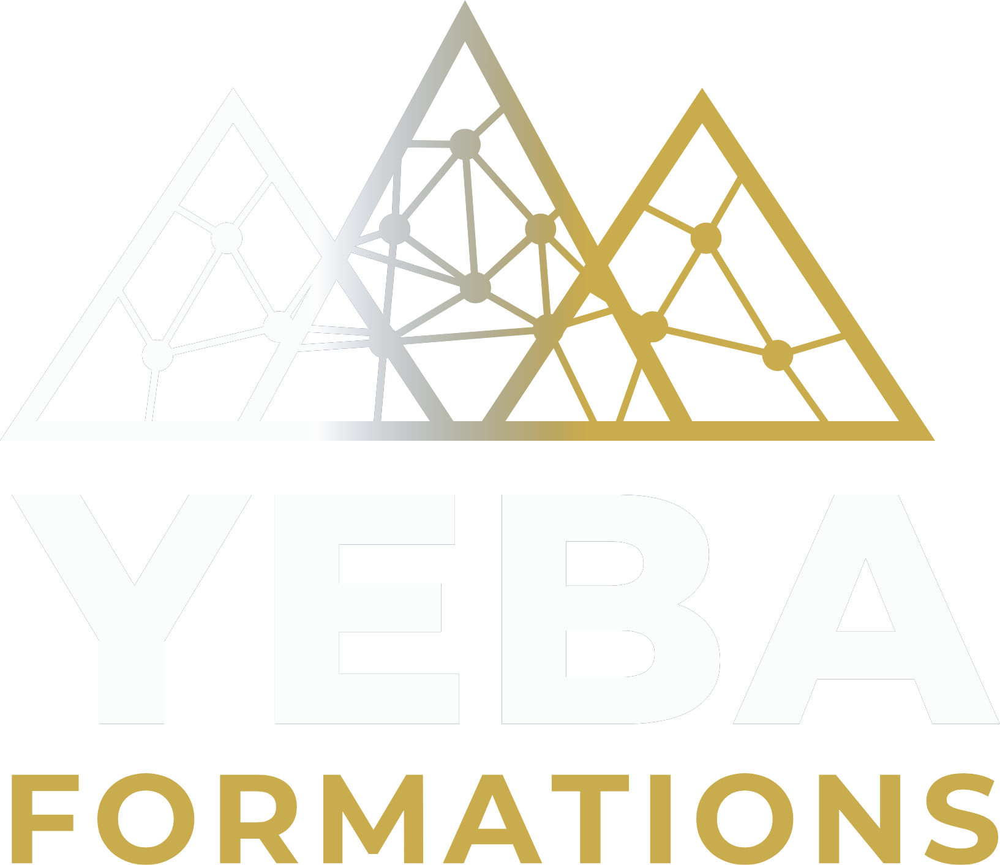
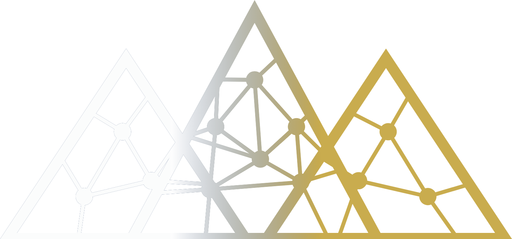
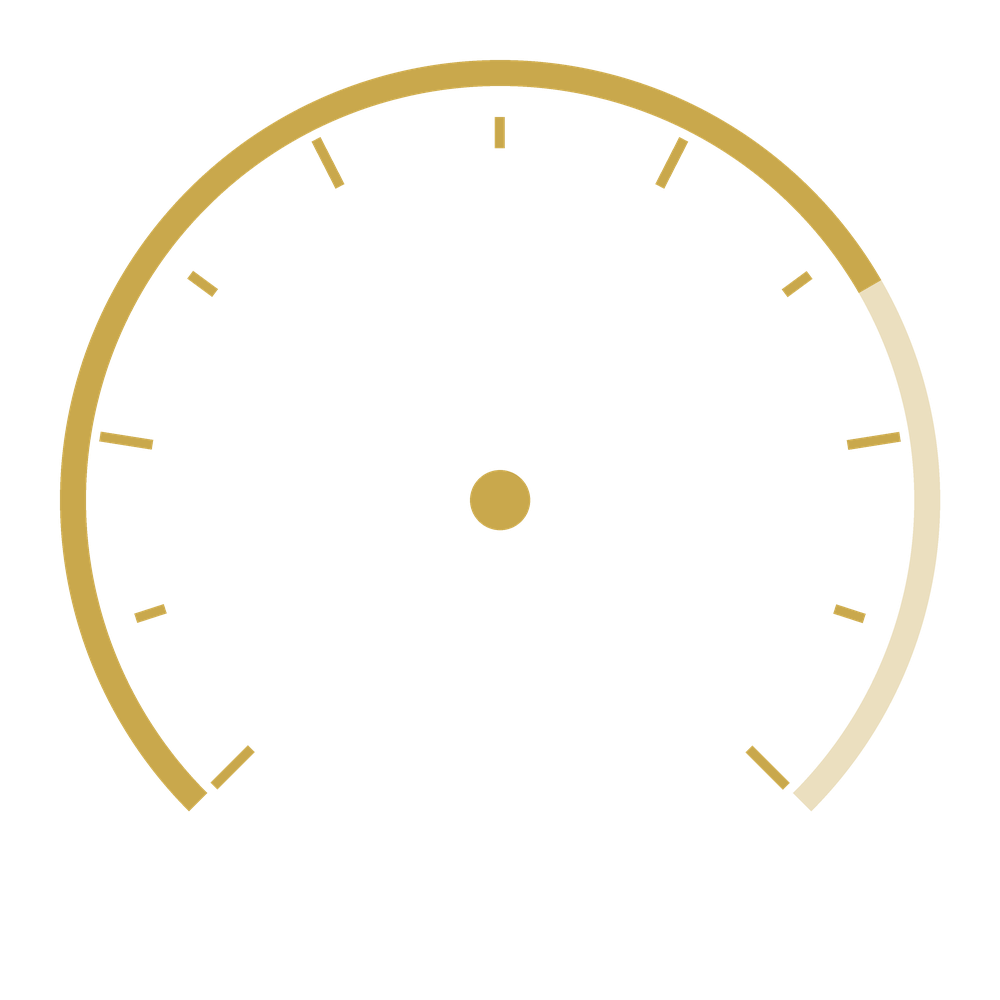

SOIRÉE DE LANCEMENT
[DATE À PRÉCISER] · [LIEU À PRÉCISER] · La Réunion
CE SOIR

Pas de mot pour « formation ».
Alors maman a dit : Ko yeba. Le savoir.
« Savoir, connaître » — en lingala
Histoires · Vérités · Générations
HÉRITAGE
Afrique
Baobab
Transmission
MODERNITÉ
IA
Réseau
Pitons 974
QUESTION
par journée de formation.
Le standard du marché : 7 h.
NOTRE LIGNE
NOTRE PROMESSE
L'IMAGE À RETENIR

IA générative
IA · niveau avancé
Internet à la voix
Emailing · IA
ET MAINTENANT